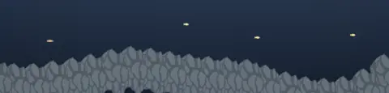

Package detail
Endless Ocean (Preview)
Version 0.2.1
What it does
Take the final vanilla boat east to find a continuous seabed, three biomes and wrecks with rare fish nearby. Returning to an unloaded stretch regenerates its initial terrain and fish from the saved seed.
Requirements
- JAMM-CGF with a configured August 2023 legacy VM base.
- Build into a separate game copy; do not use the current Steam YYC archive as the base.
Install
- Download this source ZIP.
- In JAMM, choose Add mods and import the ZIP.
- Enable it in a profile, check the profile, then build or install to a separate game copy.
In-game controls
- Take the final vanilla boat east. To choose a layout, set
seedin the recipe before building, or edit[World] seedin the generated INI while the game is closed.
Screenshots




How it works
The floor joins the last collidable terrain and eases into a continuous profile over three chunks. The generator reserves the existing room dimensions and artwork before adding 488 exploration chunks of 2,048 pixels each.
Native CaveRock silhouettes, kelp, corals and lights mark sandy shelves, rocky slopes and trenches. Each floor strip has a matching slope mask and a world-aligned seamless cobble underlay to the room bottom.
The camera streams at most five chunks. Each can spawn one vanilla fish per depth band, with a collision check before spawning. Wrecks appear 10–20 chunks apart and attract a rare fish within the same budget.
The seed defaults to 271828 and is shared by all slots in the save directory. Primary and backup saves skip transient fish IDs.
Technical facts
| Package type | Recipe |
|---|---|
| Manifest file | jamm-recipe.json |
| Version | 0.2.1 |
| Generator | endless-ocean (recipe generator version 2) |
| APIs used | JAMM chunk layout and streaming scripts, GameMaker instance and collision APIs, legacy Boat7, Fish and save events, and Catalog API lookup when installed. |
| Assets and scripts added | Three runtime objects, five sprites built from the local archive, and fifteen standalone scripts. The recipe guards the native fish respawn script and both SaveManager writes. |
| Save-file behaviour | The seed is the only generated-world state saved. jamm_endless_ocean.ini stores it under [World] as seed, shared by all slots in that save directory. Transient fish instance IDs are excluded from [Fishes]. Normal catches, quests and Fishalog progress still use the game's save system. |
| Compatibility and merge behaviour | Targets the August 2023 legacy VM archive or a compatible merged archive. Enable the recipe in a JAMM profile, or build it on top of a verified pack archive. Use JAMM with Endless Ocean generator version 2. |
Version history
- 0.2.1: Seamless cobble seafloor built from the vanilla cave rock (16 Wang tile variants on one texture page, no visible grid), matching slope caps.
- 0.2.0: Seeded three-biome seafloor, native scenery and wrecks, and merged-layout callback recompilation.
Measured performance
Seven-pack build, dock: 48.4 ms → 49.7 ms with Endless Ocean (mean of 2 runs, within noise). Chunks outside the view are not simulated, so the extended area does not add per-tick fish work at the dock.
FAQ
Files in the package
README.mdjamm-recipe.json